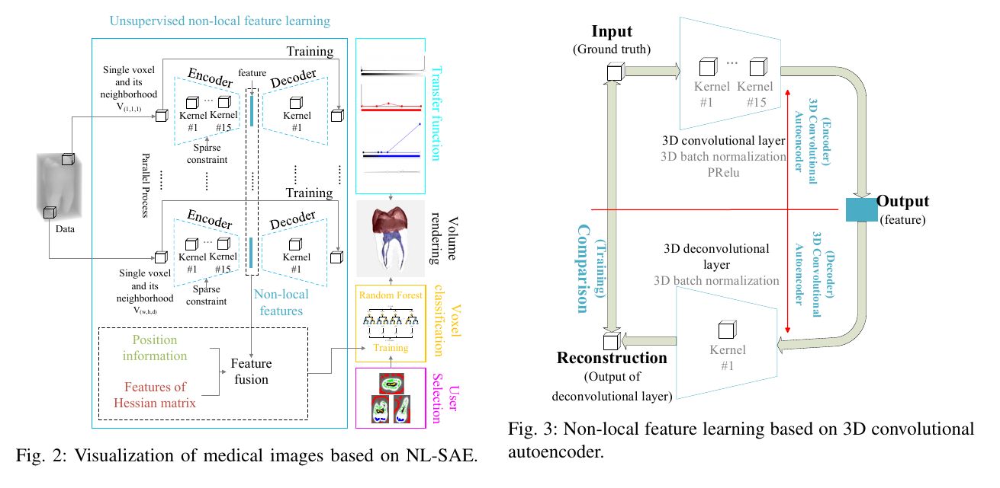
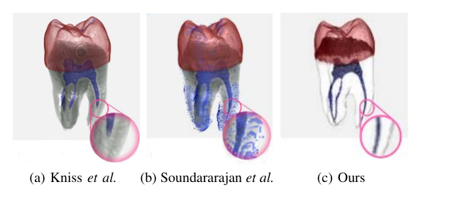
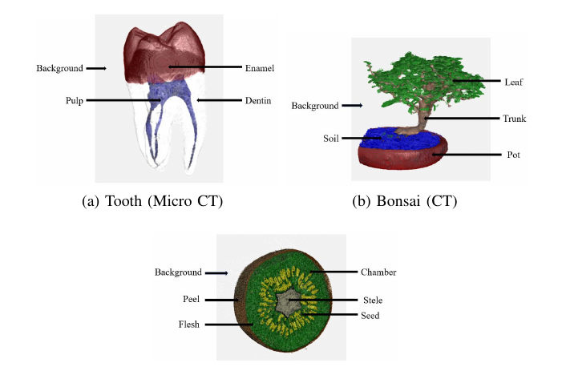
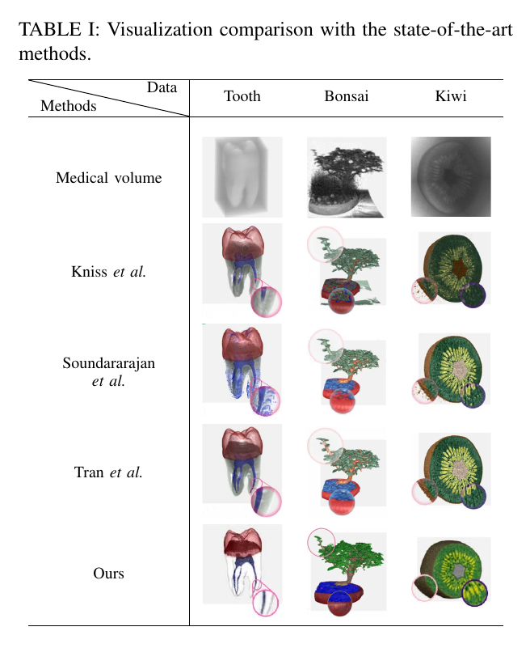

Paper Summary
Fast feature learning for medical DVR
Problem Hand-crafted features can miss subtle structures in medical direct volume rendering.
Approach The paper uses an unsupervised 3D-CNN autoencoder with non-local feature learning and a sparse constraint.
Output Extracted features are fused with position and Hessian information for voxel classification and transfer-function design.
Method Overview
From 3D volume to feature-aware rendering

Experimental Results
Datasets and rendering comparisons
Selected figures show the tooth CT visualization comparison, the volume datasets used in the experiments, and comparisons with prior visualization methods.



Research Positioning
Where this work fits
Medical volume rendering Fast transfer-function design for CT/MRI visualization where manual feature selection can be time-consuming.
Unsupervised feature learning Non-local voxel representations learned without labels, paired with a sparse constraint for discriminative feature extraction.
Feature-aware visualization Learned features combined with position and Hessian information for voxel classification and direct volume rendering.
Citation
BibTeX
@inproceedings{fu2021fast,
title={Fast and Unsupervised Non-Local Feature Learning for Direct Volume Rendering of 3D Medical Images},
author={Fu, Xinmei and Shao, Zhenzhou and Qu, Ying and Guan, Yong and Zou, Yibo and Shi, Zhiping and Tan, Jindong},
booktitle={2021 IEEE/RSJ International Conference on Intelligent Robots and Systems (IROS)},
pages={5886--5891},
year={2021},
organization={IEEE},
doi={10.1109/IROS51168.2021.9636042}
}